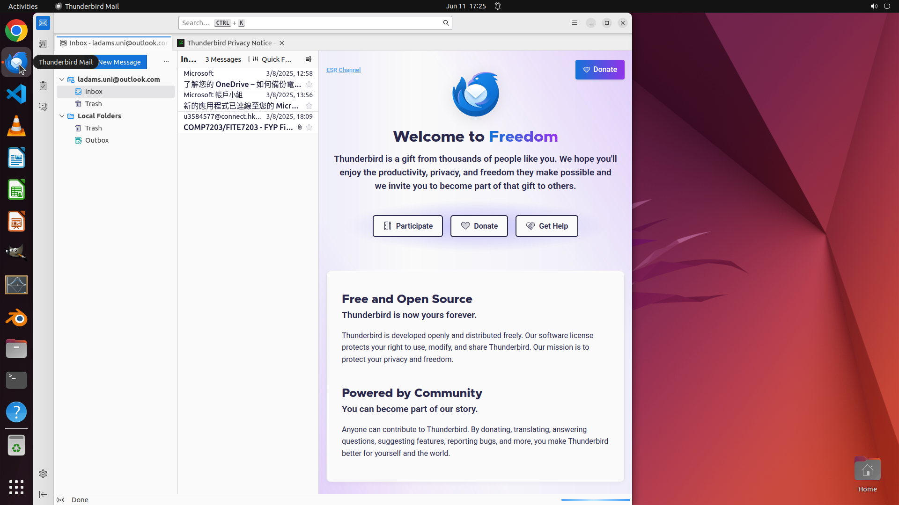
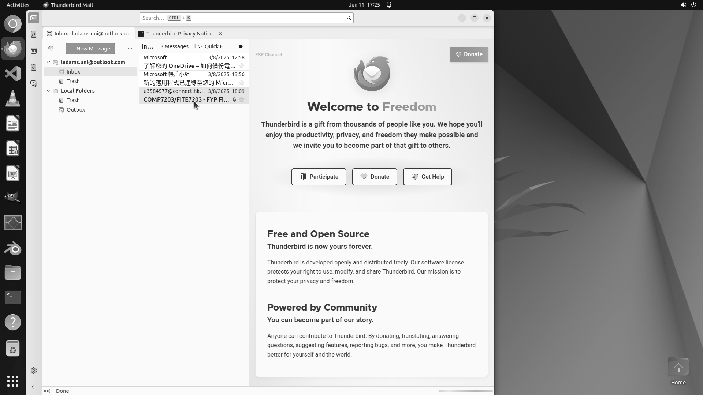
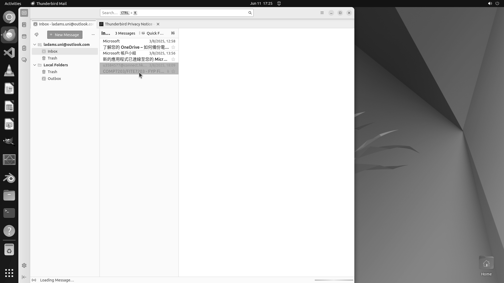
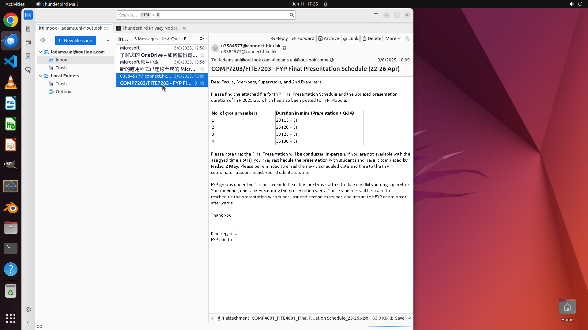
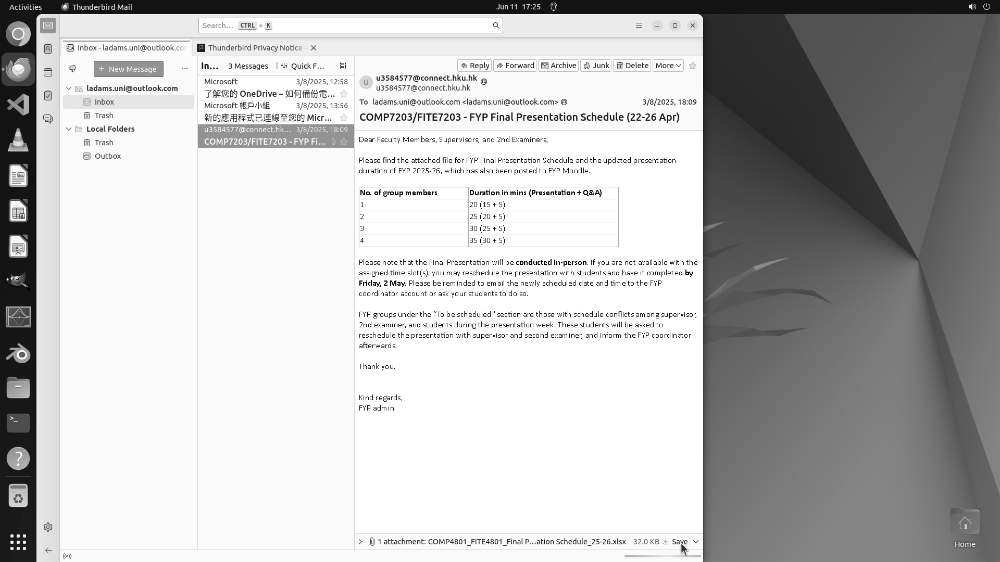
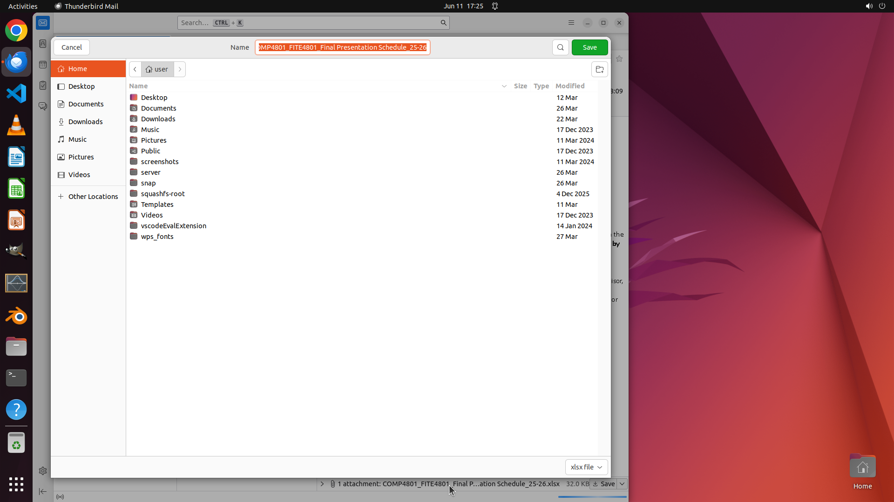
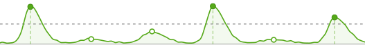
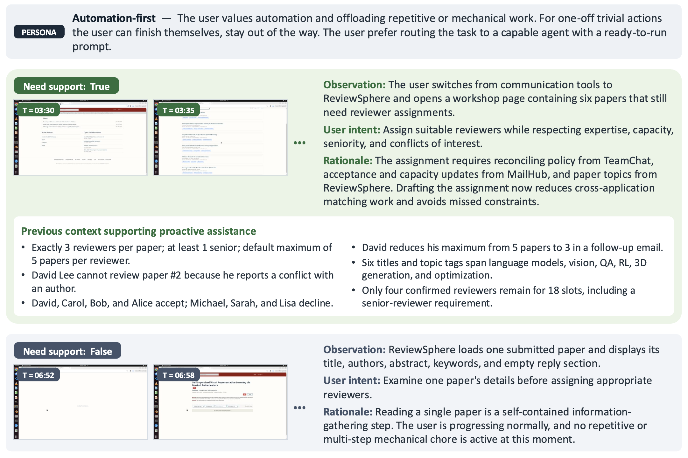
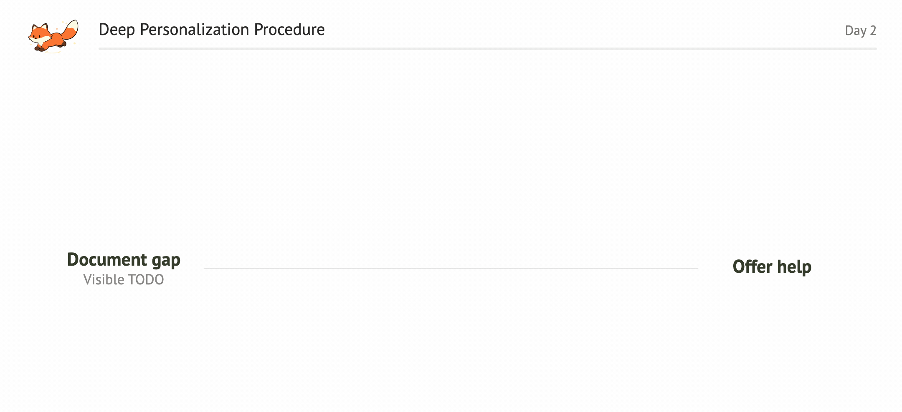
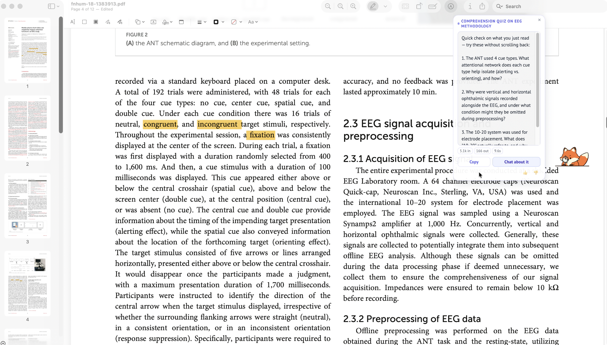

Motivation: A missing piece in proactive agent
Personal agents are moving from tools you open to co-workers that live alongside you. But as these agents become more personal and proactive, a harder question comes up: not just what they can do, but when you actually want them to do it.
Timely proactive support matters beyond convenience. Many people don't yet recognize when AI could help them. An agent that observes context and offers help at the right moment can bring AI assistance to people who would never think to ask, even though intelligence is now at their fingertips. But getting the timing right is hard. An intervention that helps one user may be redundant or disruptive for another, and even the same user may want different levels of help across tasks and situations.
From Static User Profiles to Deep Personalization
Static profiles and settings menus can’t capture preferences like these, because the preferences depend on the situation. Instead, we propose deep personalization: a closed-loop process in which an agent continuously observes user activities, selectively retains user context, makes personalized intervention decisions, and adapts itself from implicit user feedback. The agent thus builds its understanding of the user from everyday interaction—what they are working on, how they work, what assistance they value, and when they prefer to be left alone. It keeps revising the understanding as it watches how its interventions land.
We build this into Coco, an open-source proactive agent system (Figure 1). With deep personalization, Coco’s core now does three things:
- Observe continuously. It processes desktop activity and keeps a compact long-term memory of the user’s ongoing work. This hidden state is updated with each observation and conditions every decision.
- Decide when to help. It predicts whether proactive assistance would be valuable right now.
- Adapt from implicit feedback. It treats the user’s acceptances, rejections, explicit requests, and repetitive-work patterns as supervision signals. It refines itself through evolutionary prompt optimization and LoRA fine-tuning.

The Observer only decides when to help. The agent that carries out the help is separate. Because of this split, deep personalization can complement existing agent harnesses such as Claude Code, Codex or Pi or other vertical agents.
Running a continuous observer on device
Personalized AI has a built-in tension. The more context an agent sees and retains, the better it personalizes, but the more sensitive information it exposes. Here we ask, can we get the best of both worlds by achieving deep personalization on the user device?
Serving the Observer on-device is a different workload from data-center LLM serving. It must process high-frequency screen captures in real time while also running personalization updates. We address this with two techniques:
- Frame deduplication. Consecutive screenshots are often nearly identical, but even small pixel differences still produce different visual tokens. We align actions with frames and retain an intermediate screenshot only when its RGB MSE from the last retained frame exceeds a threshold. Actions from discarded frames carry forward, preserving interaction context. On a workload replayed on DGX Spark, this raises the KV cache hit rate from 26.7% to 45.2%, which matters under tight device memory.
- Priority scheduling. We configure priority for different workloads on a single model: Observation and user-facing inference run in the foreground; each step in the personalization workload runs after one minute of inactivity, and full personalization updates wait for a longer idle period. This keeps learning from delaying observation and also improves cache locality.
Change-aware frame selection
Keep a screenshot when its RGB mean squared error (MSE) from the last retained frame exceeds a threshold. Carry actions from skipped frames forward to preserve context.

✓ Keep
× Skip
× Skip
✓ Keep
× Skip
✓ Keep
Actions from skipped frames carry forward to the next retained frame.
Latency (s)
Lower is better
Time to first token (s)
Lower is better
KV cache hit rate (%)
Higher is better
MM cache hit rate (%)
Higher is better
Besides the two techniques, we use cti-engine, a single-GPU engine that supports both inference and fine-tuning on the same model instance and is friendly for workload-specific optimization, and use speculative decoding through block diffusion prediction (Chen et al., 2026) to further speed up inference. When we deploy Qwen3.5-35B-A3B-FP8 on DGX Spark, we observe mean time-to-first-token as 2.831s and mean latency as 7.518s, reaching the requirement of Coco's interaction cycle.
Evaluating proactive support at scale
Proactive assistance is difficult to study with text-only datasets: the agent’s decision depends on what is happening on the screen and how the person prefers to work. To make evaluation more representative, we developed a pipeline that turns computer-use recordings into personalized support examples.
The pipeline extracts key frames, pairs them with simulated user personas, and uses a vision-language model to label whether assistance would be welcome. We split sessions chronologically for each persona, so evaluation measures how well a system can adapt to a person’s preferences over time.
We applied the pipeline to OSWorld 2.0 (Yuan et al., 2026) and created OSWorld-Persona, a dataset with 6,558 key frames and 3,259 proactive-support annotations across 108 sessions. Four personas capture different preferences, from welcoming frequent help to preferring assistance only when stuck. We used self-consistency checks and human review to improve label quality.

We evaluate whether the Observer Agent identifies moments when help is needed while limiting unwanted interruptions. The table shows macro F1 for the unadapted model and Coco under deep personalization with evolutionary prompt optimization (Coco-PE) and LoRA fine-tuning (Coco-LoRA).
| Observer Agent model | Vanilla F1 | Coco-PE F1 | Coco-LoRA F1 |
|---|---|---|---|
| Qwen-3.5-9B | 0.1861 | 0.4832 (2.6×) | 0.4551 (2.4×) |
| Qwen-3.5-35B-A3B | 0.1827 | 0.4334 (2.4×) | 0.3135 (1.7×) |
| Nemotron-3-Nano-Omni | 0.1175 | 0.3211 (2.7×) | 0.3485 (3.0×) |
A week with Coco
We further deployed Coco as a desktop assistant with the Observer running Qwen3.5-9B on a single RTX 5090 and let ten participants use it during their normal computer work for one week.
We treated a thumbs-up as a helpful suggestion and a thumbs-down or dismissal as an unwanted one. When Coco stayed silent but a participant directly asked it for help, we counted that as a proxy for a missed opportunity. This measure may underestimate unmet needs, since participants might want help without explicitly asking.
Across the study, the macro-averaged F1 proxy rose from 0.199 to 0.515. The results also show a cold start: on Day 1, six participants had an F1 proxy of zero because Coco had not yet made a helpful proactive suggestion. After adaptation, each of them received suggestions they rated as helpful.
What does Deep Personalization learn?
We examined how Coco’s learned preferences changed over time in one author’s deployment. Early on, it learned broad cues such as a visible “TODO” could signal an opportunity to help, while technical output often called for silence. With more feedback, the distinction became more precise. On Day 5, Coco learned workflow-aware boundaries, such as to offer help while the user was filling in a TODO, but to stay quiet when they were reviewing the full document.
By the end of the week, it had learned a more specific boundary and learned to infer user intent: the user welcomed help filling a generative gap, but preferred to integrate verified content independently. The preference was not simply “help with documents.” It depended on the kind of work underway.


Discovering how we can collaborate with agents
When we interact with non-technical users, we realize deep personalization may do more than improving proactive support timing. It can help people discover where AI fits into their work.
One participant initially saw Coco as similar to the AI tools she already used. On Day 3, Coco proactively offered to explain unfamiliar taxonomy while she was reading technical material. She continued using that kind of support during the study. With her permission, we reviewed the memory on her device: Coco had learned that she valued explanations for jargon in technical blogs, but not while reading forum posts or scrolling through research papers; and further asks the user questions as this type of behavior is marked as thumb-up by the user.


This points to a broader possibility. People may not begin with a clear picture of how an agent could help them. A system that observes work and learns from feedback can surface useful forms of collaboration and then adapt as a person decides what works for them.
Conclusion
We present deep personalization: agents that evolve with their users through continuous context observation and implicit feedback. On our OSWorld-Persona testbed, this improves proactive support timing by 2.4–3× F1 gain across three model families. In a week-long study with ten participants, the F1 proxy rose from 0.199 to 0.515. All of this runs on local AI compute platform, so the context that makes an agent personal stays on the user’s device.
Looking ahead, we see deep personalization as a foundation for everyday personal assistants. An assistant built into an operating system or wearable could maintain context across applications, learn when a person welcomes help, and delegate execution to specialized agents. Our separation between observation and execution offers one possible architecture: a local Observer learns the user’s preferences, then brings in the appropriate agent when assistance would be useful.
Ultimately, we believe new local compute platforms can let AI do more than answer queries or execute tasks. The goal is an assistant that grows with its user, helps them discover where AI fits into their work, and leaves them in control of when and how it helps.
BibTeX
@article{shao2026deep,
title={Deep Personalization: Continuous Context Observation for Local Proactive Agents},
author={Shao, Yijia and Bian, Song and Guo, Junxian and Jiang, Jindong and Dong, Zhen and Mao, Huizi and Yang, Diyi and Han, Song},
journal={arXiv preprint arXiv:2611.13457},
year={2026}
}